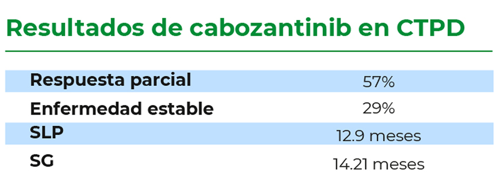
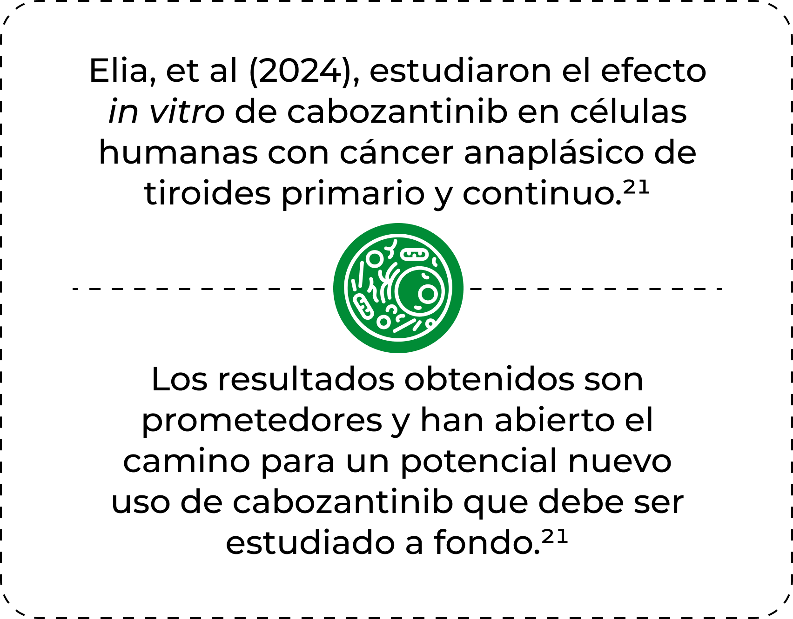

TIME-LINE DE SU DESARROLLO CLÍNICO
El futuro de cabozantinib en el cáncer de tiroides20-21
El futuro de cabozantinib en el cáncer de tiroides20-21
Elghawy, et al (2024), observaron que en
el estudio COSMIC-311 se incluyeron 7
pacientes con cáncer de tiroides
pobremente diferenciado (CTPD) que
también se beneficiaron del tratamiento
con cabozantinib.20
el estudio COSMIC-311 se incluyeron 7
pacientes con cáncer de tiroides
pobremente diferenciado (CTPD) que
también se beneficiaron del tratamiento
con cabozantinib.20
SLP, supervivencia libre de progresión; SG, supervivencia global.

